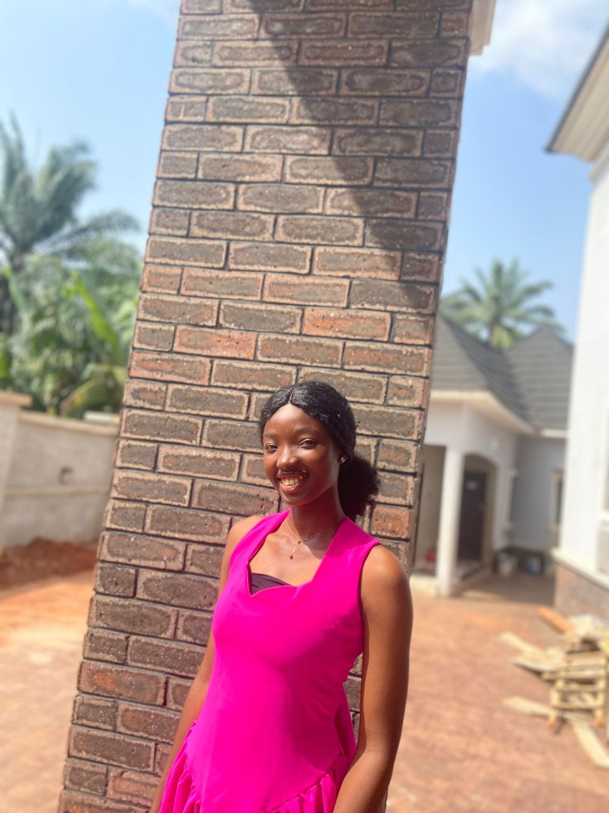

I am a computer science student at ABUDLC and also work as a teacher. I am passionate about using technology to solve problems. I believe in setting boundaries to stay focused on learning and teaching.
ABU Distance Learning Centre, Zaria
2024 - Present.
2025 - Present.